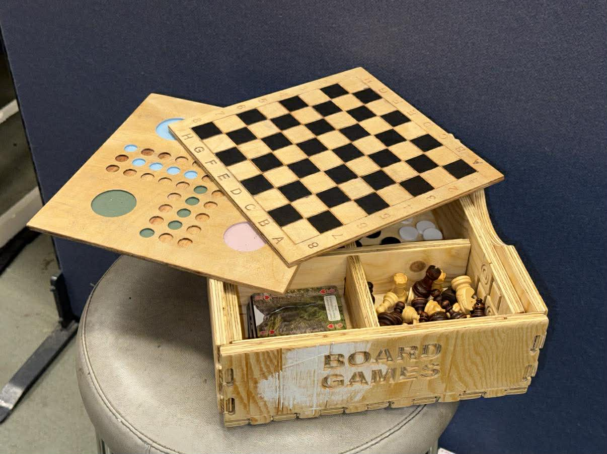
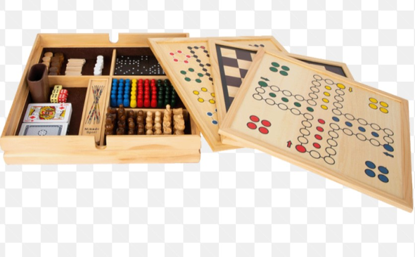
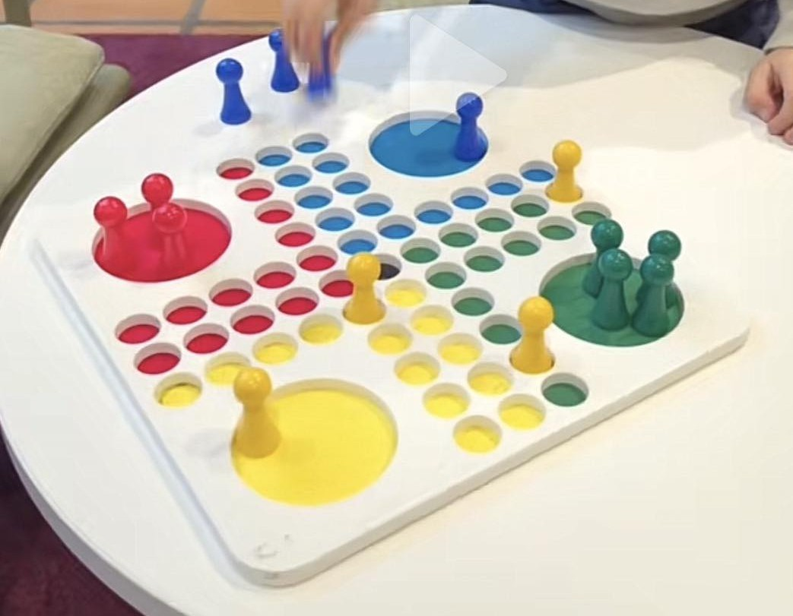
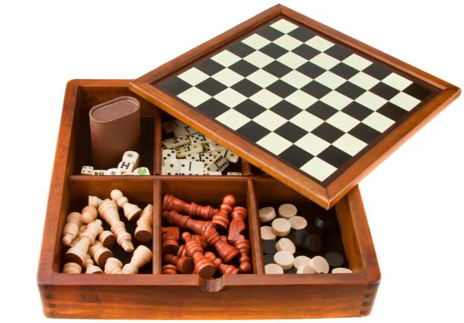
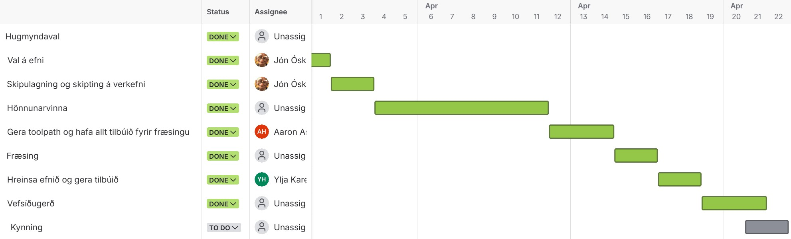

Lokaverkefni - Borðspilasett
Hópur:
Aaron Asug Rosento, Jón Óskar Guðmundsson og Ylja Karen Þórðardóttir

Í lokaverkefninu í Tölvustuddri framleiðslu var markmiðið að hanna, teikna, undirbúa og fræsa heilstætt verkefni með CNC-fræsingu. Hægt var að velja á milli tveggja aðferða. Fyrsti möguleikinn var að búa til eitthvað með ShopBot PRS5 Alpha þar sem ýmiskonar efni voru í boði til að fræsa. Hinn möguleikinn var að fræsa mót í vaxi með Roland SRM-20. Hópurinn ákvað að hanna borðspilasett sem sameinar tvö klassísk spil, Skák og Lúdó, í einum kassa þar sem hægt er að skipta á milli spilaborða og geyma alla hluti á einum stað.
Hugmyndaleit
Í upphafi var farið yfir verkefni hjá nemendum frá fyrri árum til að átta sig betur á þeim möguleikum sem CNC-fræsing býður upp á. Einnig var leitað að innblæstri á netinu, þá með fræsurunum sem voru í boði. Mörg af þeim fræsingum höfðu mjög flott mynstur og gröft sem komu mjög flott út og var það eitthvað sem hópurinn vildi gera. Á endanum var ákveðið að gera borðspilakassa. Til voru margar mismunandi og flottar gerðir af borðspilakössum á netinu sem voru notaðar sem innblástur, en nokkrar af þeim má sjá hér fyrir neðan.



Meginhugmyndin varð því að búa til kassa með skiptanlegum plötum fyrir skák og Ludo, ásamt hólfum fyrir kallana og annan fylgibúnað.
Verkefnastjórnun
Notast var við Jira Trello til að skipuleggja vikurnar fram að skilum. Þar voru helstu verkþættir skipulagðir niður á vikur og þeim raðað upp eftir framvindu verkefnisins, frá hugmyndavinnu og efnisvali yfir í hönnun, fræsingu, frágang og gerð vefsíðu. Slík skipulagning gerði hópnum kleift að fylgjast betur með stöðu verkefnisins og tryggja að allir verkþættir skiluðu sér á réttum tíma. Hér fyrir neðan má sjá verkferlið fram að skilum.

Verkaskipting
Verkefninu var skipt niður í helstu verkþætti og ábyrgð dreift á milli hópmeðlima. Sumir verkþættir voru unnir sameiginlega, en aðrir voru í umsjón ákveðins aðila.
- Hugmyndaval: Allir
- Val á efni: Jón Óskar
- Skipulagning og verkaskipting: Jón Óskar
- Hönnunarvinna: Allir
- Verkfæraferla (Toolpaths): Aaron
- Fræsing: Allir
- Frágangur efnis: Ylja og Aaron
- Vefsíðugerð: Allir
- Kynning: Allir